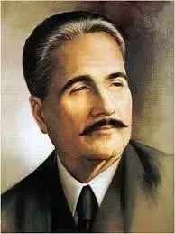

Allama Muhammad Iqbal

Allama Iqbal, whose full name is Muhammad Iqbal, was born on November 9, 1877, in Sialkot, a
city in British India (now in Pakistan).
He received his initial education in Sialkot and later went on to study in Lahore and then in
Europe, where he studied philosophy, law, and literature. He earned a degree in philosophy from the
University of Cambridge and a doctorate from the University of Munich.
Allama Iqbal was a renowned poet whose poetry is known for its depth, philosophical insight,
and inspirational messages.
He is often referred to as the "Philosopher of the East" for his profound philosophical ideas
and contributions to Islamic thought.
Iqbal emphasized the importance of self-realization and individual growth, encouraging people
to recognize their potential and work towards self-improvement.
He introduced the concept of "Khudi," which means selfhood or self-awareness, emphasizing the
development of a strong and confident self-identity.
Iqbal's poetry inspired the youth and played a pivotal role in the awakening of the
subcontinent's Muslim population during the British colonial period.
He advocated for the unity of Muslims across the world and played a significant role in
shaping the vision for a separate Muslim state, which ultimately led to the creation of Pakistan.
Allama Iqbal is celebrated as the national poet of Pakistan, and his poetry is an integral
part of the country's cultural heritage.
Iqbal also made significant contributions to education and played a key role in establishing
educational institutions like Jamia Millia Islamia in India.
His works, including "Bang-e-Dra," "Asrar-e-Khudi," and "Payam-e-Mashriq," continue to be
studied and celebrated for their literary and philosophical value.
Allama Iqbal's writings addressed various social and political issues, offering solutions and
ideas for a better society.
His ideas and poetry have had a lasting impact not only in the Indian subcontinent but also
on Muslim communities around the world.
Allama Iqbal is remembered as a symbol of intellectualism and a source of inspiration for
those seeking personal and collective progress.